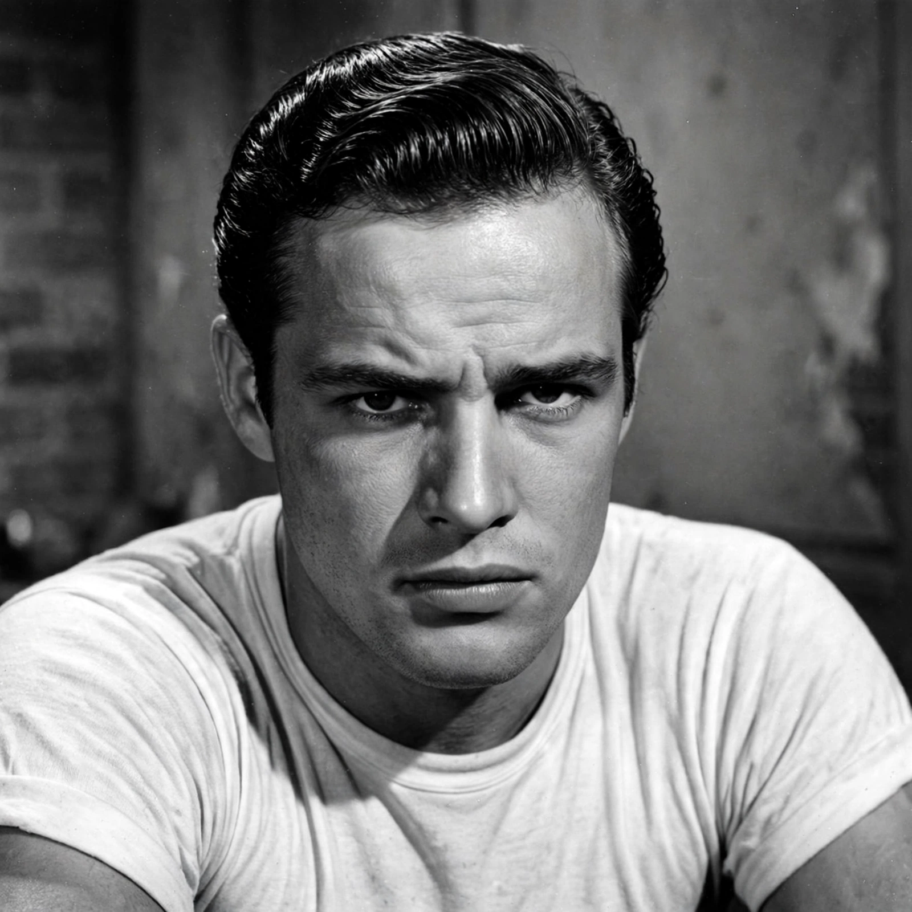

Marlon Brando
| Marlon Brando | |
|---|---|
 | |
| Born | Marlon Brando Jr. April 3, 1924 Omaha, Nebraska, U.S. |
| Died | July 1, 2004 (aged 80) Los Angeles, California, U.S. |
| Occupation | Actor |
| Years active | 1944–2004 |
| Awards | Academy Award for Best Actor (1954, 1972) |
Marlon Brando Jr. (April 3, 1924 – July 1, 2004) was an American actor. Widely regarded as one of the greatest and most influential actors of all time, he received numerous accolades throughout a career that spanned six decades, including two Academy Awards, two Golden Globe Awards, a Cannes Film Festival Award, and three British Academy Film Awards. Brando is credited with being one of the first actors to bring the Stanislavski system of acting and method acting to mainstream audiences.
Early life and stage career
Brando was born in Omaha, Nebraska, and raised mainly in Libertyville, Illinois. After expulsion from military school he moved to New York, studying with Stella Adler at the Actors Studio tradition and with Lee Strasberg. He made his Broadway breakthrough in 1947 as Stanley Kowalski in the original production of Tennessee Williams's A Streetcar Named Desire, directed by Elia Kazan.
Film career
Brando's film debut came in The Men (1950), playing a paraplegic veteran. He reprised Kowalski in the 1951 film of A Streetcar Named Desire, then starred in Viva Zapata! (1952), Julius Caesar (1953), and The Wild One (1953), whose image of Brando in leather jacket and cap became an icon of youthful rebellion. He won his first Academy Award for Best Actor for On the Waterfront (1954), delivering the famous "I coulda been a contender" speech.
His career uneven in the 1960s — punctuated by the troubled production of Mutiny on the Bounty (1962), filmed in Tahiti, where he later bought the atoll of Tetiaroa — Brando returned to prominence with two landmark performances in 1972: Vito Corleone in Francis Ford Coppola's The Godfather, for which he won his second Oscar, and Paul in Bernardo Bertolucci's Last Tango in Paris. He famously refused the Godfather Oscar, sending Native American activist Sacheen Littlefeather to the 1973 ceremony to protest Hollywood's treatment of Native Americans. Later roles included Colonel Kurtz in Apocalypse Now (1979) and Jor-El in Superman (1978).
Activism and later life
Brando was a longtime activist for civil rights and Native American rights, participating in the civil rights movement and supporting AIM. He spent much of his later life at Tetiaroa in French Polynesia and in Los Angeles, becoming increasingly reclusive. He died of respiratory failure in 2004.
Legacy
Brando transformed screen acting with a naturalistic, emotionally raw style that influenced generations of performers, from James Dean and Paul Newman to Robert De Niro and Jack Nicholson. The American Film Institute ranked him among the greatest male stars of classic American cinema.
Selected filmography
- A Streetcar Named Desire (1951)
- The Wild One (1953)
- On the Waterfront (1954)
- Guys and Dolls (1955)
- Mutiny on the Bounty (1962)
- The Godfather (1972)
- Last Tango in Paris (1972)
- Superman (1978)
- Apocalypse Now (1979)
- Don Juan DeMarco (1995)
See also
References
Manso, Peter (1994). Brando: The Biography. Hyperion.
Brando, Marlon, with Robert Lindsey (1994). Brando: Songs My Mother Taught Me. Random House.